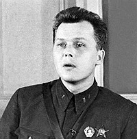

Творчество писателей
Неоспоримым вкладом в общую копилку стало творчество А. Твардовского. Конечно, самое известное из его произведений – поэма «Василий Теркин» стало некой иллюстрацией жизни простого русского солдата. Она глубоко раскрывала характерные черты советского воина, за что и стала горячо любимой в народе. Твардовский А. Т.В «Балладе о товарище» поэт писал: «Своя беда не в счет». Эта строчка наглядно раскрывает нам те патриотические порывы, благодаря которым люди не сдавались. Они были готовы перетерпеть многое. Главное – знать, что они борются за победу. И даже если ее цена будет слишком высока.

На митинге советских писателей прозвучало обещание «весь свой опыт и талант, всю свою кровь, если это понадобится, отдать делу священной народной войны против врагов нашей Родины». Более половины из них открыто ушли на фронт воевать с врагом. Многие из них, в том числе, А. Гайдар, Е. Петров, Ю. Крымов, М. Джалиль, так и не вернулись.Многие произведения советских писателей печатались в главной газете СССР на тот момент – «Красная звезда». Там публиковалось творчество В. В. Вишневского, К. М. Симонова, А. П. Платонова, В. С. Гроссман. Большую роль играет во время войны и творчество К.М. Симонова. Это и стихотворения «Сороковые», «Если дорог тебе твой дом», «У огня», «Смерть друга», «Мы не увидимся с тобой». Спустя некоторое время после второй мировой был написан первый роман Константина Михайловича «Товарищи по оружию». Свет он увидел в 1952 году.